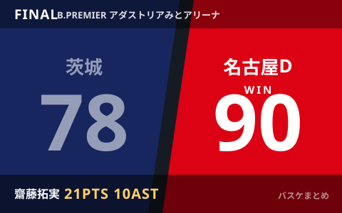

名古屋Dが開幕5連勝 齋藤拓実21得点10アシスト 秋田は宇都宮に約3年ぶり勝利

10月11日、りそなB.LEAGUE PREMIER(Bプレミア)は各地で試合が行われました。水戸市のアダストリアみとアリーナでは、名古屋ダイヤモンドドルフィンズが茨城ロボッツを90-78で下し、開幕から負けなしの5連勝としました。司令塔の齋藤拓実が21得点10アシストのダブルダブルを記録し、後半の逆転劇を演出しています。一方、栃木県宇都宮市のとちぎん・ブレックスアリーナ宇都宮では、アウェーの秋田ノーザンハピネッツが宇都宮ブレックスを82-71で退け、対戦成績で約3年ぶりの勝利を挙げました。
名古屋D、齋藤拓実のダブルダブルで開幕5連勝
名古屋ダイヤモンドドルフィンズは敵地で茨城ロボッツと対戦し、後半に逆転して90-78で勝利しました。司令塔の齋藤拓実は21得点10アシストのダブルダブルを記録し、終盤の攻撃をコントロールしてチームを勝利に導きました。これで名古屋Dは開幕から負けなしの5連勝。一方の茨城は、この黒星で連敗を重ねる苦しいシーズン立ち上げとなっています。
| 対戦 | スコア |
|---|---|
| 茨城ロボッツ ● － ○ 名古屋ダイヤモンドドルフィンズ | 78－90 |
秋田が宇都宮に約3年ぶり勝利、終始リードを守る
秋田ノーザンハピネッツは敵地で宇都宮ブレックスと対戦し、82-71で勝利しました。公式記録によるクォーター別のスコアは1Q21-18、2Q18-16、3Q17-15、4Q26-22で、秋田が試合を通じてリードを守り切る展開でした。対戦成績では秋田の宇都宮戦勝利は約3年ぶりとされており、今季序盤の大きな収穫となりました。
| 対戦 | スコア |
|---|---|
| 秋田ノーザンハピネッツ ○ － ● 宇都宮ブレックス | 82－71 |
この日の他の試合
11日はBプレミアで複数のカードが組まれ、各地で熱戦が繰り広げられました。これらの試合の詳細なスコア・個人成績は、本記事執筆時点で複数メディアによる裏取りが取れていないため、B.LEAGUE公式サイトまたは各クラブの公式発表をご確認ください。
Q. 「対戦成績で約3年ぶり」とは？
A. 直接対決の勝敗だけを数えた期間で、必ずしもリーグ戦全体の順位や強さを示すものではありません。あくまで両クラブの直接対決の記録です。
出典：バスケットボールキング「齋藤拓実が21得点10アシストのダブルダブル…名古屋Dが後半の逆転劇で茨城を下す」／西日本新聞（共同通信配信）「名古屋Dが開幕5連勝 バスケBプレミア」／秋田ノーザンハピネッツ公式「【試合結果】10/11（日）vs.宇都宮ブレックス」／B.LEAGUE公式 対戦成績ページほか
https://basketballking.jp/news/japan/20261011/637261.html
https://www.nishinippon.co.jp/item/1547925/
https://northern-happinets.com/news/detail/id=22933
https://www.bleague.jp/record/?club1=703&club2=693